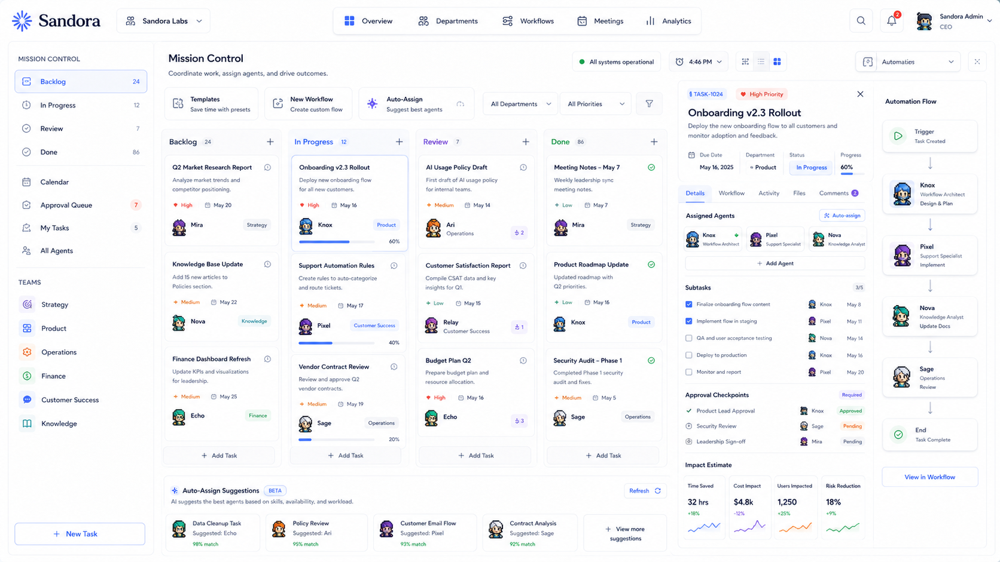
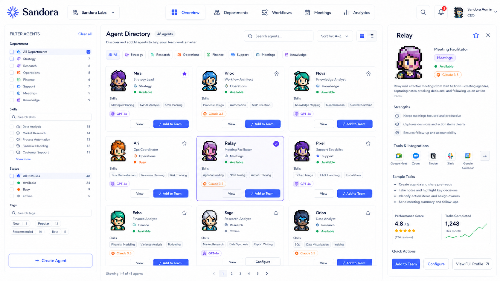
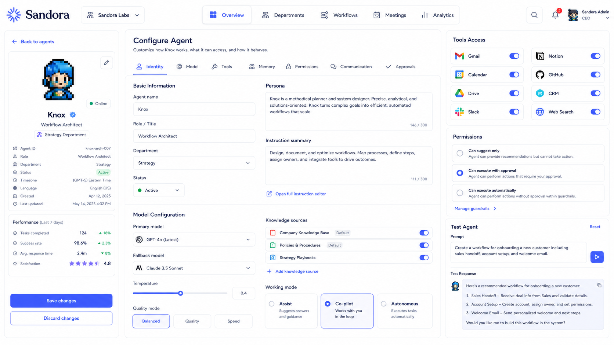

Shape the team
Bring specialized agents into departments with roles, memory, and boundaries.
The AI team operating layer
Sandora turns a collection of capable agents into a coordinated, accountable team—organized around the work your people already do.
Private prototype · not a production service
The missing middle
A single prompt can be brilliant. A real team needs shared context, clear handoffs, and a record of what happened. Sandora is the layer that makes those things native.
Bring specialized agents into departments with roles, memory, and boundaries.
Turn intent into workflows with human approvals exactly where they matter.
Follow decisions, progress, and outcomes from one legible command center.
A calm command center
Sandora gives every layer of an AI team a home—without hiding the human decisions that keep it on track.
Designed for the whole team
Zoom out to see your company operating in sync. Zoom in to tune one agent’s role, tools, and guardrails.
Backlogs, active workflows, approvals, and agent suggestions in one shared view.

Discover specialists, understand their strengths, and add them with intention.

Set permissions, connect knowledge, and choose how much autonomy each agent earns.

“The goal isn’t to replace the team.
It’s to make the team more capable.”
A small door, for now
Leave a note and we’ll share the prototype when the timing is right. This is a demo-only interaction—nothing is sent anywhere.